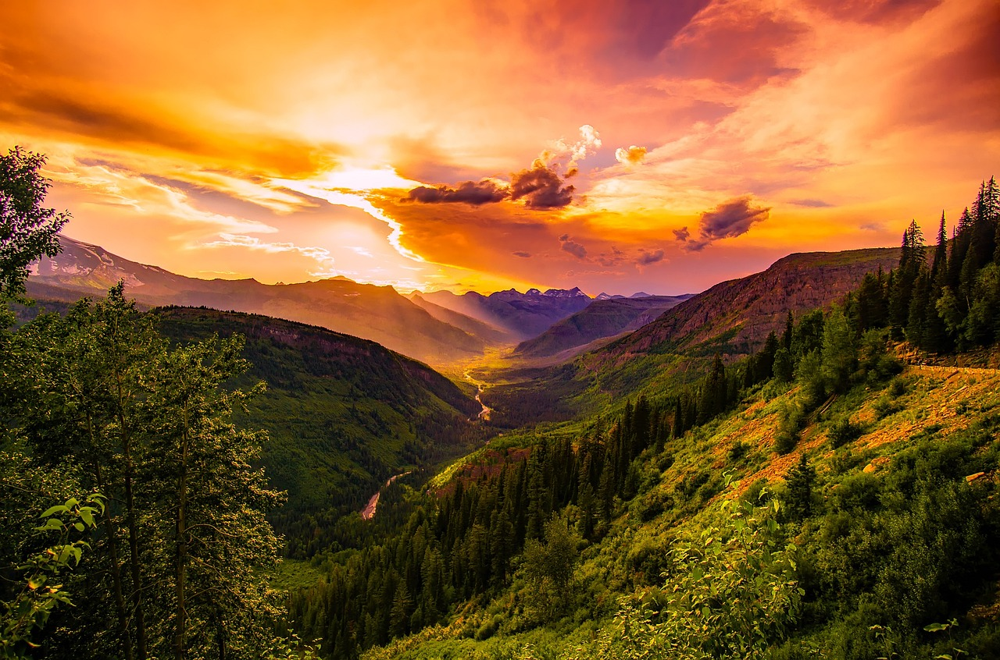

por do sol em montana

O pôr do sol em Montana é um espetáculo de cores quentes que pintam o céu, transformando as montanhas em silhuetas sombrias contra um fundo dourado e rosado. À medida que o sol se despede, o vento suave sopra pelas pradarias, e o silêncio da natureza se torna ainda mais profundo. É um momento de paz, onde o dia se despede lentamente, deixando no ar a sensação de que o tempo ali é mais longo, mais calmo, como se as montanhas quisessem guardar aquele instante para sempre.